Android is an open-source, Linux-based mobile operating system and comprehensive software stack engineered for touchscreen mobile devices (smartphones, tablets), wearable technology (Wear OS), smart televisions (Android TV), and automotive entertainment platforms (Android Automotive). Founded by Andy Rubin in 2003 and acquired by Google in 2005, Android is maintained under the stewardship of the Open Handset Alliance (OHA) and distributed primarily under the permissive Apache 2.0 open-source license.
Android is an open-source, multi-layered software platform comprising a modified Linux kernel, hardware abstraction layer (HAL), native C/C++ core libraries, the Android Runtime (ART) execution engine, an application framework, and pre-installed system applications, providing an abstraction barrier between mobile hardware and end-user applications.
Android releases follow a disciplined progression designated by incremental API levels, numerical version strings, and historically iconic confectionery codenames. Understanding this evolutionary lineage is essential for targeting hardware capabilities and managing backward compatibility.
| Version | Public Name & Codename | API Level | Year | Major Architectural Milestones & Features |
|---|---|---|---|---|
| Android 1.0 | Base / "Apple Pie" | API 1 | 2008 | HTC Dream (G1) launch, notification pull-down drawer, WebKit browser, Android Market, SQLite integration. |
| Android 1.1 | "Banana Bread" / "Petit Four" | API 2 | 2009 | Save attachments in MMS, support for showing/hiding dialer in active call, API stabilization. |
| Android 1.5 | Cupcake | API 3 | 2009 | First public confectionery name. On-screen virtual keyboard (IME framework), video recording/playback, app widgets. |
| Android 1.6 | Donut | API 4 | 2009 | Quick Search Box, Text-to-Speech (TTS) synthesis engine, WVGA resolution support, VPN management framework. |
| Android 2.0 / 2.1 | Eclair | API 5–7 | 2009 | Google Maps turn-by-turn navigation, HTML5 browser support, multi-account contact sync, live wallpapers. |
| Android 2.2 | Froyo (Frozen Yogurt) | API 8 | 2010 | Dalvik Just-In-Time (JIT) compiler (2x–5x performance boost), USB tethering, Wi-Fi hotspot functionality, cloud messaging. |
| Android 2.3 | Gingerbread | API 9–10 | 2010 | Native Development Kit (NDK) gaming APIs, concurrent garbage collector, Near Field Communication (NFC), front camera support. |
| Android 3.0–3.2 | Honeycomb | API 11–13 | 2011 | Tablet-optimized holographic UI, Action Bar, Fragment framework introduced, multicore CPU hardware acceleration. |
| Android 4.0 | Ice Cream Sandwich | API 14–15 | 2011 | Unified phone/tablet UI, Roboto typeface, Holo theme, virtual on-screen navigation keys, swipe-to-dismiss gesture. |
| Android 4.1–4.3 | Jelly Bean | API 16–18 | 2012 | Project Butter (60 fps VSYNC rendering), expandable rich notifications, Google Now, Bluetooth Low Energy (BLE). |
| Android 4.4 | KitKat | API 19–20 | 2013 | Project Svelte (memory footprint reduced to 512MB RAM devices), Storage Access Framework (SAF), experimental ART preview. |
| Android 5.0 / 5.1 | Lollipop | API 21–22 | 2014 | Material Design language, Android Runtime (ART) permanently replaces Dalvik, 64-bit CPU architecture, JobScheduler. |
| Android 6.0 | Marshmallow | API 23 | 2015 | Dynamic runtime permissions model (requestPermissions), Doze battery saving state, USB Type-C, Fingerprint API. |
| Android 7.0 / 7.1 | Nougat | API 24–25 | 2016 | Multi-window split-screen multitasking, Vulkan 3D graphics API, Profile-Guided Compilation (ART JIT + AOT hybrid). |
| Android 8.0 / 8.1 | Oreo | API 26–27 | 2017 | Project Treble (modular OS updates), mandatory Notification Channels, Picture-in-Picture (PiP), background execution limits. |
| Android 9.0 | Pie | API 28 | 2018 | Gesture navigation bar, Display Cutout (notch) support, Adaptive Battery (on-device ML), mandatory TLS network security. |
| Android 10 | "Quince Tart" (Android 10) | API 29 | 2019 | Public dessert naming retired; Scoped Storage privacy sandbox, system-wide Dark Theme, Project Mainline modular updates. |
| Android 11 | "Red Velvet Cake" (Android 11) | API 30 | 2020 | Dedicated Conversations notification section, Chat Bubbles, one-time permissions, Wireless ADB debugging support. |
| Android 12 / 12L | "Snow Cone" (Android 12) | API 31–32 | 2021 | Material You dynamic color theming, Privacy Dashboard, mic/cam indicator badges, mandatory android:exported in manifest. |
| Android 13 | "Tiramisu" (Android 13) | API 33 | 2022 | Per-app language preferences, system Photo Picker privacy, runtime Notification permission (POST_NOTIFICATIONS). |
| Android 14 | "Upside Down Cake" (Android 14) | API 34 | 2023 | Ultra HDR image rendering, predictive back navigation gesture preview, non-linear font scaling up to 200%. |
| Android 15 | "Vanilla Ice Cream" (Android 15) | API 35 | 2024 | Stable release. Default edge-to-edge layouts, Private Space isolated app profile, 16KB memory page size compatibility. |
| Android 16 | "Baklava" (Android 16) | API 36 | 2025 | Scheduled H1 2025. Transition to trunk-stable engineering model, Ongoing Activity / Live Updates chips, integrated photo picker. |
| Android 17 | Future Exploratory Milestone | API 37+ | 2026 | Internal AOSP development milestone advancing on-device AI integration, system modularity, and extended privacy sandboxes. |
From Android 1.5 (Cupcake) through Android 9 (Pie), Google utilized dessert confection names for public consumer marketing. Starting with Android 10, Google transitioned consumer branding to numerical releases (Android 10, 11, 12...) for international clarity. However, Google's internal engineering teams continue assigning alphabetical dessert codenames (Quince Tart, Red Velvet Cake, Snow Cone, Tiramisu, Upside Down Cake, Vanilla Ice Cream, Baklava) to manage branch merges within the Android Open Source Project (AOSP).
Every Android Studio module declares three fundamental integer version properties inside its build.gradle or build.gradle.kts script:
compileSdk: The exact Android platform SDK version used by the Gradle build system to compile the Java/Kotlin source code. It dictates which framework APIs, classes, and methods are visible to the developer at compile-time. Compiling against API 34 enables using Android 14 APIs, but does not alter runtime behavior on older devices.minSdk: The minimum API level required for a device to install and execute the application. The Google Play Store and local OS package installer (PackageManager) actively enforce this threshold, blocking devices running an earlier OS version.targetSdk: Declares the API level against which the application has been designed, implemented, and thoroughly tested. Instructs the Android OS to activate new security restrictions, permission models, and UI behavioral shifts introduced in that version (e.g., Scoped Storage on API 29, android:exported on API 31). Setting a higher targetSdk ensures modern OS compliance.android.jar), build tools (AAPT2, D8), platform tools (ADB), and hardware system images.R.java class..class files) into highly optimized Dalvik Executable (.dex) format and performs code shrinking/obfuscation.Android's operating system architecture is organized into five modular, decoupled layers. Lower layers provide system hardware abstraction and core OS security, while upper layers expose high-level Java APIs for application development.
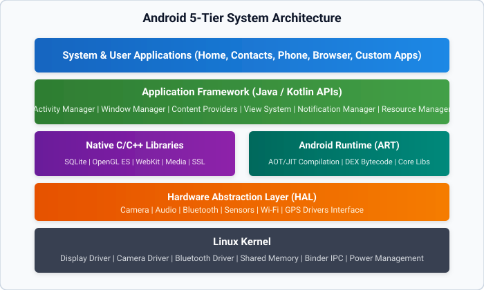
The bedrock of Android is a specialized Linux Kernel (Long Term Support branch). It interfaces directly with device hardware and provides essential operating system capabilities:
The HAL provides standard C/C++ interface contracts that hardware vendors (e.g., Qualcomm, MediaTek) implement to expose proprietary chipset capabilities to the upper Java framework without modifying framework code. Standard modules include Camera HAL, Audio HAL, Sensors HAL, and Bluetooth HAL.
Positioned directly above the HAL, these compiled native user-space libraries power resource-intensive subsystem tasks:
WebView controls.Introduced in Android 5.0 to supersede the legacy Dalvik VM, ART is the managed runtime execution engine that executes Dalvik Executable (.dex) bytecode. ART features:
dex2oat tool, drastically reducing CPU cycles during app execution.The Java/Kotlin API layer that exposes high-level operating system services to developers. Core framework managers include:
ActivityManager: Regulates the lifecycle of visual applications and manages the global navigation back stack.WindowManager: Creates and coordinates display windows, view hierarchies, and surface layouts on screen.PackageManager: Queries installed applications, inspects manifests, and validates security permissions.NotificationManager: Posts and manages user alerts in the system notification drawer.ContentProviders: Mediates secure inter-application data sharing and database querying.An Android Studio project adheres to a standardized directory layout separating executable source code, XML layouts, asset binaries, and build automation scripts.
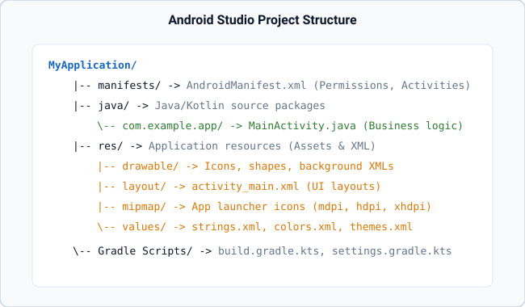
app/src/main/AndroidManifest.xml: The central deployment descriptor and system contract. Declares the app package name, all four components (Activities, Services, Receivers, Providers), required permissions, and hardware feature requirements.app/src/main/java/: Root directory containing all Java package directories and classes (e.g., com.example.login_page.MainActivity).app/src/main/res/: Directory housing static application resources:
layout/: XML layout files defining the visual structure of screens (e.g., activity_main.xml).values/: XML files defining constants: strings.xml (text), colors.xml (palette), themes.xml (styles).drawable/: Vector drawables (XML vectors) and raster graphics (PNG/JPG).mipmap/: App launcher icons configured across screen density buckets (mdpi to xxxhdpi).build.gradle: Gradle build script defining compiler target versions, external library dependencies, and build flavors.During the compilation build phase, the Android Asset Packaging Tool 2 (AAPT2) parses every file within res/ and compiles them into a static Java class named R.java. Every resource declared with an ID is assigned a static final 32-bit hexadecimal integer:
// 1. Inflating an XML layout onto an Activity window
setContentView(R.layout.activity_main);
// 2. Binding a visual UI widget by its compiled hexadecimal ID
EditText etUser = findViewById(R.id.username);
Button btnLogin = findViewById(R.id.login);
// 3. Programmatically retrieving string and color values
String appTitle = getString(R.string.app_name);
int primaryColor = getColor(R.color.blue);Android devices encompass a vast range of physical screen sizes, pixel densities, and language locales. To guarantee a uniform, crisp visual presentation, Android employs abstract measurement units and configuration qualifiers.
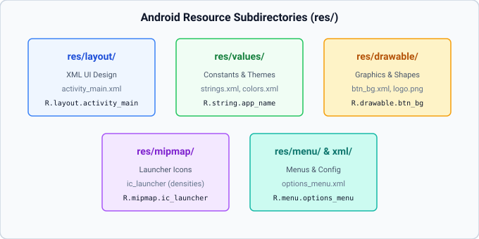
Hardcoding physical pixels (px) causes catastrophic layout variance across devices: a 100px button on a 160 dpi screen spans ~0.62 inches, but shrinks to ~0.2 inches on a 480 dpi display. Android solves this through density-independent units:
| Dimension Unit | Full Name | Scaling Factors | Mandatory Usage Rule |
|---|---|---|---|
dp / dip |
Density-independent Pixels | Scales with screen density based on a 160 dpi baseline ($1 ext{dp} = 1 ext{px}$ at 160 dpi). | Strictly use for layout dimensions: widths, heights, margins, padding, and borders. |
sp |
Scale-independent Pixels | Scales with screen density and the user's system font accessibility scaling factor. | Strictly reserved for typography: android:textSize. |
The Android OS dynamically converts dp into physical screen pixels (px) at runtime using:
Baseline densities: mdpi (160 dpi, $1 imes$), hdpi (240 dpi, $1.5 imes$), xhdpi (320 dpi, $2 imes$), xxhdpi (480 dpi, $3 imes$), xxxhdpi (640 dpi, $4 imes$).
The Android runtime dynamically selects alternative resources from qualified subdirectories based on active device state:
| Qualifier Category | Folder Syntax | Triggering Runtime Condition |
|---|---|---|
| Orientation | res/layout-land/ | User rotates device into landscape mode. |
| Night Mode | res/values-night/ | User enables system-wide Dark Theme (Night mode). |
| Smallest Width | res/layout-sw600dp/ | Device screen width exceeds 600dp (standard 7-inch+ tablet). |
| Screen Density | res/drawable-xxhdpi/ | High-density screen (~480 dpi) to ensure sharp bitmap rendering. |
| Locale / Language | res/values-hi/ | Device language configured to Hindi (localized UI text). |
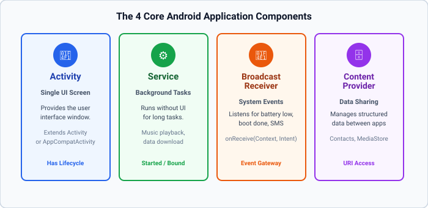
AppCompatActivity). It serves as the primary gateway for user interaction.onReceive().query, insert, update, delete) for cross-process data sharing across applications.The AndroidManifest.xml file is the root deployment descriptor of an Android application. The operating system inspects this manifest prior to instantiating any component. Any component not declared in the manifest cannot be executed by the OS.
<?xml version="1.0" encoding="utf-8"?>
<manifest xmlns:android="http://schemas.android.com/apk/res/android"
package="com.example.myapp">
<!-- System Permissions Declarations -->
<uses-permission android:name="android.permission.INTERNET" />
<application
android:allowBackup="true"
android:icon="@mipmap/ic_launcher"
android:label="@string/app_name"
android:theme="@style/Theme.AppCompat.Light">
<!-- Main Launcher Activity (Entry Point) -->
<activity
android:name=".MainActivity"
android:exported="true">
<intent-filter>
<action android:name="android.intent.action.MAIN" />
<category android:name="android.intent.category.LAUNCHER" />
</intent-filter>
</activity>
<!-- Secondary Private Activity -->
<activity
android:name=".SecondActivity"
android:exported="false" />
</application>
</manifest>An Android Activity is governed by a deterministic, callback-driven state machine managed by the Android OS framework. As the user navigates into, away from, and back to an app, the OS transitions the Activity through distinct lifecycle states, firing corresponding callback methods.
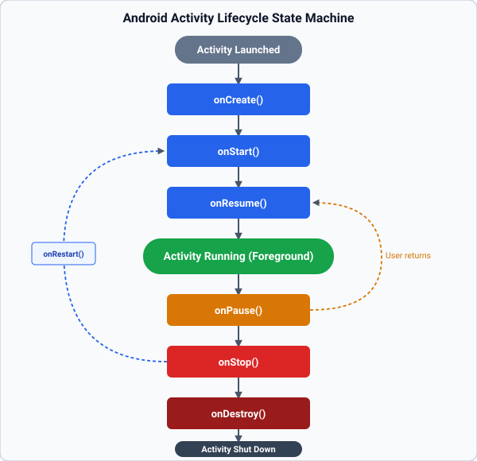
onCreate(Bundle savedInstanceState): Fired when the Activity is first instantiated in memory. Perform static initializations: inflate layout via setContentView(), bind view variables via findViewById(), and configure listener callbacks.onStart(): Fired when the Activity becomes visible to the user on screen, but is not yet interactive in the foreground.onResume(): Fired when the Activity enters the active foreground running state and begins receiving user touch input.onPause(): Fired when the Activity is partially obscured (e.g., by a dialog, incoming phone call, or split-screen mode). Pause lightweight animations or commit unsaved inputs.onStop(): Fired when the Activity is completely hidden from view. Heavy background tasks should be halted and state saved to SharedPreferences.onRestart(): Fired when an Activity that was previously stopped transitions back toward the visible foreground prior to onStart().onDestroy(): Final cleanup hook before the Activity instance is completely purged from process RAM (called via finish() or OS reclaiming memory).Every lifecycle callback implementation in Java must invoke its parent class method (e.g. super.onCreate(savedInstanceState);) as its very first statement. Omitting this super call causes the runtime framework to throw a fatal SuperNotCalledException, crashing the app.
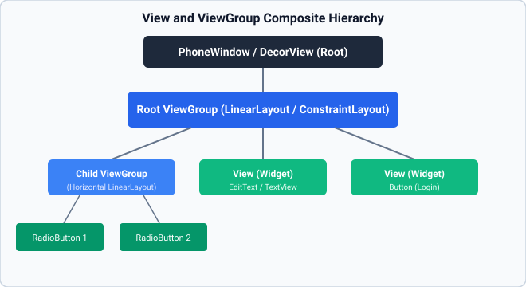
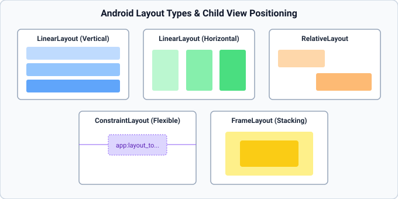
| UI Component | Java Class | Primary Purpose & Configuration Attributes |
|---|---|---|
| TextView | android.widget.TextView | Renders read-only formatted text. Key attributes: android:text, textSize, textColor, textStyle. |
| EditText | android.widget.EditText | User text input field. Key attributes: android:hint, inputType="textPassword|number", maxLength. |
| Button | android.widget.Button | Clickable push button that triggers action callbacks. Key attribute: android:text. |
| CheckBox | android.widget.CheckBox | Two-state toggle supporting independent multi-selection. Method: isChecked(). |
| RadioButton | android.widget.RadioButton | Single-choice circular option button. Must be hosted inside a RadioGroup to enforce mutual exclusion. |
| Spinner | android.widget.Spinner | Compact dropdown selector populated via an ArrayAdapter. |
| ListView | android.widget.ListView | Vertically scrollable collection container featuring view recycling via an adapter. |
LinearLayout: Arranges child elements in a single sequential direction (android:orientation="vertical" or "horizontal"). Supports proportional spacing using android:layout_weight.RelativeLayout: Arranges child elements relative to their parent container boundaries (e.g. alignParentTop="true") or relative to sibling views (e.g. layout_below="@id/header").ConstraintLayout: Flexible, flat layout manager that positions widgets using dual-axis constraints anchored to parent edges or sibling guidelines, eliminating costly view nesting.ScrollView: A container providing vertical scrolling when child content exceeds physical screen boundaries. Mandatory Rule: A ScrollView can host strictly one direct child ViewGroup!| Comparison | First Option | Second Option | Key Difference & Usage Rule |
|---|---|---|---|
padding vs margin |
android:padding: Internal spacing inside view perimeter. |
android:layout_margin: External spacing outside view border. |
Padding expands touchable area; margin creates distance between sibling views. |
gravity vs layout_gravity |
android:gravity: Aligns content inside the view (e.g., text in button). |
android:layout_gravity: Aligns the view itself inside its parent container. |
Gravity controls internal alignment; layout_gravity controls external container placement. |
match_parent vs wrap_content |
match_parent: Expands view to occupy 100% of available parent dimension. |
wrap_content: Shrinks view to encompass only its internal content. |
Use match_parent for full-width inputs; use wrap_content for buttons and labels. |
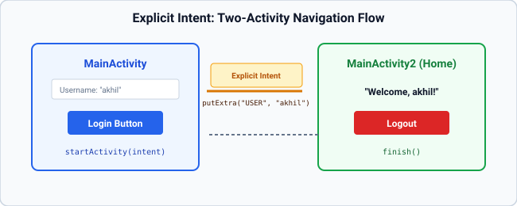
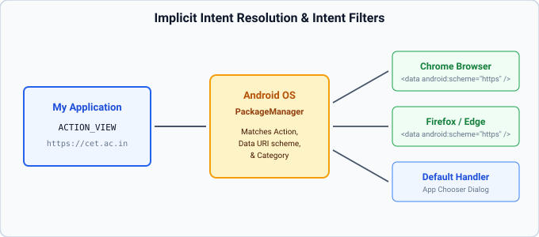
User interactions (taps, text input, selections) generate asynchronous event objects dispatched to registered listener interfaces:
Button btn = findViewById(R.id.btnSubmit);
btn.setOnClickListener(new View.OnClickListener() {
@Override
public void onClick(View v) {
// Asynchronous touch callback executed on the UI Thread
Toast.makeText(MainActivity.this, "Action Triggered", Toast.LENGTH_SHORT).show();
}
});| Criteria | Explicit Intent | Implicit Intent |
|---|---|---|
| Definition | Directly designates the exact target Java class in the local package. | Declares an abstract Action and Data URI for external handling. |
| Syntax | new Intent(this, SecondActivity.class) | new Intent(Intent.ACTION_VIEW, Uri.parse("https://cet.ac.in")) |
| Target Component | Known, internal application screen. | Any external installed application registered to handle the action. |
| Security & Resolution | Deterministic; resolved instantly within the app sandbox. | Resolved dynamically by the OS PackageManager via Intent Filters. |
| Failure Mode | Fails at compile-time if class missing. | Throws ActivityNotFoundException if no matching app exists (wrap in try-catch). |
Intents transfer primitive and serializable data across Activity boundaries using an internal Bundle payload:
// 1. Sender Activity (Packing Data)
Intent intent = new Intent(MainActivity.this, HomeActivity.class);
intent.putExtra("USER_KEY", username);
intent.putExtra("AGE_KEY", 22);
startActivity(intent);
// 2. Receiver Activity (Unpacking Data in onCreate)
Intent receivedIntent = getIntent();
String user = receivedIntent.getStringExtra("USER_KEY");
int age = receivedIntent.getIntExtra("AGE_KEY", 0); // Requires default value for primitives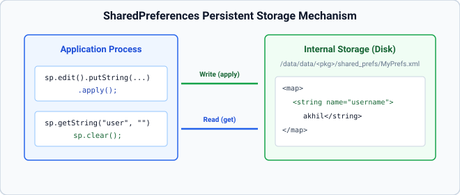
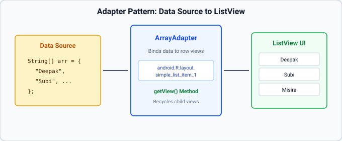
SharedPreferences stores primitive key-value pairs (String, int, boolean, float, long) in private XML files located under /data/data/<package_name>/shared_prefs/. Ideal for session tokens, user settings, and remember-me states.
// Opening Preferences in Private Mode
SharedPreferences sp = getSharedPreferences("UserSession", MODE_PRIVATE);
// Writing Data
sp.edit()
.putString("USERNAME", "akhil")
.putBoolean("IS_LOGGED_IN", true)
.apply(); // Asynchronous disk write (safe for UI thread)
// Reading Data (with fallback defaults)
String user = sp.getString("USERNAME", "Guest");
boolean logged = sp.getBoolean("IS_LOGGED_IN", false);
// Clearing Session Data
sp.edit().clear().apply();An Adapter acts as a structural bridge between an in-memory data collection (such as an ArrayList<String>) and an AdapterView (such as ListView or Spinner). To conserve memory, Android recycles views: rather than creating 1,000 views for a 1,000-item list, the framework only instantiates enough views to fill the physical screen (~10 views) and re-binds them as the user scrolls.
| Storage Mechanism | Data Format | File Visibility | Lifecycle Persistence | Ideal Use Case |
|---|---|---|---|---|
| SharedPreferences | Key-Value XML | Private to App | Persistent until app data cleared. | User preferences, flags, auth tokens. |
| Internal Storage | Raw files / caches | Private to App | Persistent until uninstalled. | Private app documents, temporary cache files. |
| External Storage | Scoped Media files | Public / Scoped | Persistent (user-managed). | Photos, videos, shared PDF documents. |
| SQLite / Room | Relational SQL DB | Private to App | Persistent structured data. | Complex datasets, offline caching, catalogs. |
Defensive validation prevents invalid data submissions and avoids runtime exceptions:
String user = etUser.getText().toString().trim();
String pass = etPass.getText().toString();
if (user.isEmpty()) {
etUser.setError("Username is required");
etUser.requestFocus();
return;
}
if (pass.length() < 4) {
etPass.setError("Password must be at least 4 characters");
etPass.requestFocus();
return;
}new AlertDialog.Builder(this)
.setTitle("Exit Application")
.setMessage("Are you sure you want to log out?")
.setPositiveButton("Yes", (dialog, which) -> finish())
.setNegativeButton("No", null)
.show();NotificationChannel specifying importance levels.AndroidManifest.xml (e.g. INTERNET). Automatically granted at install time.CAMERA, ACCESS_FINE_LOCATION). Must be requested dynamically at runtime using requestPermissions() on API 23+.Logcat records system and application diagnostic output across five priority levels:
Log.v(TAG, msg); — Verbose: Detailed low-level diagnostic tracing.Log.d(TAG, msg); — Debug: General developer diagnostic information.Log.i(TAG, msg); — Info: Informational application milestones.Log.w(TAG, msg); — Warning: Non-fatal unexpected conditions.Log.e(TAG, msg); — Error: Critical exceptions and application errors.Android native development in Java builds extensively upon Object-Oriented Programming (OOP) paradigms, polymorphic inheritance hierarchies, interface-driven callbacks, dynamic collections, and exception handling. Mastering these targeted concepts is essential for understanding how the Android framework dispatches events and orchestrates component lifecycles.
In Android, every screen is created by sub-classing framework classes:
// Activity Hierarchy
public class MainActivity extends AppCompatActivity {
@Override
protected void onCreate(Bundle savedInstanceState) {
super.onCreate(savedInstanceState);
setContentView(R.layout.activity_main);
}
}The super.onCreate(savedInstanceState) call is mandatory; omitting it throws a SuperNotCalledException runtime crash.
Asynchronous event dispatching relies on Java interfaces:
// Defining Interface
public interface OnClickListener {
void onClick(View v);
}
// Anonymous Implementation in Android
button.setOnClickListener(new View.OnClickListener() {
@Override
public void onClick(View v) {
// Callback method invoked on touch event
}
});Unlike fixed-length arrays, ArrayList provides resizeable collections used by adapters to power dynamic lists and spinners:
import java.util.ArrayList;
ArrayList<String> fruitList = new ArrayList<>();
fruitList.add("Apple");
fruitList.add("Mango");
fruitList.add("Banana");
// Accessing by index
String item = fruitList.get(0); // "Apple"
int count = fruitList.size(); // 3
// Iterating collection
for (String f : fruitList) {
Log.d("Fruit", f);
}Mobile applications must handle parsing and activity resolution errors gracefully without terminating the process:
try {
double num = Double.parseDouble(inputStr);
Intent intent = new Intent(Intent.ACTION_VIEW, uri);
startActivity(intent);
} catch (NumberFormatException e) {
editText.setError("Invalid numeric format");
} catch (ActivityNotFoundException e) {
Toast.makeText(this, "No app available", Toast.LENGTH_SHORT).show();
}To design an interactive user authentication screen using LinearLayout, capture user credentials via EditText, perform defensive input validation with visual error badges (setError()), and provide immediate transient feedback using Android Toast notifications.
User authentication interfaces require structured vertical stacking of form controls and defensive client-side validation. In Android, LinearLayout coordinates children along a single vertical axis. Input strings extracted via getText().toString().trim() are validated against emptiness and credential requirements. When validation fails, setError() anchors a warning popup to the offending widget. Upon successful authentication, Toast.makeText().show() displays a floating message that automatically dismisses without disrupting the underlying Activity lifecycle.
LinearLayout (vertical orientation, centered gravity, 30dp padding).TextView (header), EditText (username), EditText (password with android:inputType="textPassword"), Button (login trigger).setContentView(), findViewById(), setOnClickListener(), getText().toString().trim(), isEmpty(), setError(), Toast.makeText(..., Toast.LENGTH_SHORT).show().activity_main.xml via setContentView() in onCreate().username, password, login) using findViewById().View.OnClickListener to the login button.onClick(), extract string contents: user = username.getText().toString().trim() and pass = password.getText().toString().user.isEmpty(), execute username.setError("Enter username") and return.pass.isEmpty(), execute password.setError("Enter password") and return.admin/1234 or akhil/akhil@123).Toast.makeText(..., "Login Successful", Toast.LENGTH_SHORT).show(); otherwise show "Invalid credentials".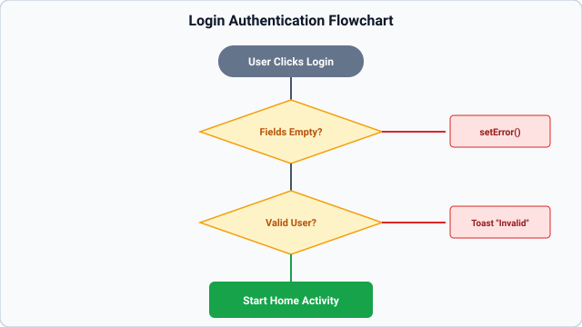
01_Login_Page/app/src/main/res/layout/activity_main.xml
<?xml version="1.0" encoding="utf-8"?>
<LinearLayout xmlns:android="http://schemas.android.com/apk/res/android"
android:layout_width="match_parent"
android:layout_height="match_parent"
android:orientation="vertical"
android:gravity="center"
android:padding="30dp">
<TextView
android:layout_width="wrap_content"
android:layout_height="wrap_content"
android:text="LOGIN"
android:textSize="28sp"
android:textStyle="bold"
android:layout_marginBottom="30dp" />
<EditText
android:id="@+id/username"
android:layout_width="match_parent"
android:layout_height="wrap_content"
android:hint="Username"
android:inputType="text"
android:layout_marginBottom="15dp" />
<EditText
android:id="@+id/password"
android:layout_width="match_parent"
android:layout_height="wrap_content"
android:hint="Password"
android:inputType="textPassword"
android:layout_marginBottom="20dp" />
<Button
android:id="@+id/login"
android:layout_width="wrap_content"
android:layout_height="wrap_content"
android:text="LOGIN" />
</LinearLayout>
01_Login_Page/app/src/main/java/com/example/login_page/MainActivity.java
package com.example.login_page;
import androidx.appcompat.app.AppCompatActivity;
import android.os.Bundle;
import android.view.View;
import android.widget.Button;
import android.widget.EditText;
import android.widget.Toast;
public class MainActivity extends AppCompatActivity {
EditText username, password;
Button login;
@Override
protected void onCreate(Bundle savedInstanceState) {
super.onCreate(savedInstanceState);
setContentView(R.layout.activity_main);
username = findViewById(R.id.username);
password = findViewById(R.id.password);
login = findViewById(R.id.login);
login.setOnClickListener(new View.OnClickListener() {
@Override
public void onClick(View view) {
String user = username.getText().toString().trim();
String pass = password.getText().toString();
if (user.isEmpty()) {
username.setError("Enter username");
} else if (pass.isEmpty()) {
password.setError("Enter password");
} else if ((user.equalsIgnoreCase("admin") && pass.equals("1234")) ||
(user.equalsIgnoreCase("akhil") && pass.equals("akhil@123"))) {
Toast.makeText(MainActivity.this, "Login Successful", Toast.LENGTH_SHORT).show();
} else {
Toast.makeText(MainActivity.this, "Invalid credentials", Toast.LENGTH_SHORT).show();
}
}
});
}
}
findViewById() resolves the R-class integer tokens (R.id.username, R.id.password, R.id.login) to concrete in-memory view instances created by AAPT2.login.setOnClickListener(...) registers an anonymous inner class implementing View.OnClickListener. The framework dispatches touch events to onClick(View view) on the Main UI Thread.username.getText().toString().trim() safely extracts user input, converting the editable buffer to an immutable String and stripping extraneous whitespace.isEmpty(). If blank, setError() displays an inline warning badge and pops a focus indicator.user.equalsIgnoreCase(...) performs case-insensitive username comparison combined with strict case-sensitive password verification, triggering appropriate Toast messages.if (pass.length() < 8) { password.setError("Password must be at least 8 characters"); return; }HashMap<String, String>) so newly registered accounts can authenticate immediately at runtime.Writing Toast.makeText(this, "Success", Toast.LENGTH_SHORT); creates the Toast object in memory but fails to display it on screen. Calling .show() is mandatory to register the toast with the system NotificationManager service.
Setting inputType="textPassword" masks keystrokes with dots and disables dictionary word suggestions, clipboard history previews, and third-party keyboard telemetry for security.
To implement a full-featured arithmetic calculator application in Android using nested horizontal and vertical LinearLayout containers, capturing numeric input through an interactive grid of buttons, handling four basic arithmetic operations (+, -, *, /), and performing defensive division-by-zero checks.
A responsive calculator UI requires proportional distribution of buttons across the screen. This is achieved using nested LinearLayout containers with android:layout_weight="1" and android:layout_width="0dp" / android:layout_height="0dp". The calculator state machine maintains two double-precision operands and an active operator symbol (+, -, *, /). Defensive checks catch empty operand entries and prevent runtime ArithmeticException or Infinity values when dividing by zero.
LinearLayout hosting an EditText display and 5 nested horizontal LinearLayout button rows.EditText (input/output screen with inputType="numberDecimal"), 16 numeric and operational Button controls (0-9, ., +, -, *, /, =, C).Double.parseDouble(), String.valueOf(), setText(), setSelection(), setError(), Toast.makeText().activity_main.xml in onCreate() and bind references to the display EditText (t1) and all 16 buttons.firstOperand, record the operator character, and clear the display for the next number.secondOperand.switch-case structure. If the operator is division (/) and secondOperand == 0, display an error Toast ("Cannot divide by zero!").EditText. When Clear (C) is pressed, reset all operands and clear the display.02_Simple_Calculator/app/src/main/res/layout/activity_main.xml
<?xml version="1.0" encoding="utf-8"?>
<LinearLayout
xmlns:android="http://schemas.android.com/apk/res/android"
android:layout_width="match_parent"
android:layout_height="match_parent"
android:orientation="vertical"
android:padding="8dp">
<EditText
android:id="@+id/t1"
android:layout_width="match_parent"
android:layout_height="0dp"
android:layout_weight="2"
android:gravity="end|center_vertical"
android:padding="16dp"
android:textSize="36sp"
android:textStyle="bold"
android:hint="0"
android:inputType="numberDecimal" />
<!-- Row 1 -->
<LinearLayout
android:layout_width="match_parent"
android:layout_height="0dp"
android:layout_weight="1"
android:orientation="horizontal">
<Button
android:id="@+id/b1"
android:layout_width="0dp"
android:layout_height="match_parent"
android:layout_weight="1"
android:layout_margin="2dp"
android:textSize="22sp"
android:text="1" />
<Button
android:id="@+id/b2"
android:layout_width="0dp"
android:layout_height="match_parent"
android:layout_weight="1"
android:layout_margin="2dp"
android:textSize="22sp"
android:text="2" />
<Button
android:id="@+id/b3"
android:layout_width="0dp"
android:layout_height="match_parent"
android:layout_weight="1"
android:layout_margin="2dp"
android:textSize="22sp"
android:text="3" />
<Button
android:id="@+id/b12"
android:layout_width="0dp"
android:layout_height="match_parent"
android:layout_weight="1"
android:layout_margin="2dp"
android:textSize="22sp"
android:text="+" />
</LinearLayout>
<!-- Row 2 -->
<LinearLayout
android:layout_width="match_parent"
android:layout_height="0dp"
android:layout_weight="1"
android:orientation="horizontal">
<Button
android:id="@+id/b4"
android:layout_width="0dp"
android:layout_height="match_parent"
android:layout_weight="1"
android:layout_margin="2dp"
android:textSize="22sp"
android:text="4" />
<Button
android:id="@+id/b5"
android:layout_width="0dp"
android:layout_height="match_parent"
android:layout_weight="1"
android:layout_margin="2dp"
android:textSize="22sp"
android:text="5" />
<Button
android:id="@+id/b6"
android:layout_width="0dp"
android:layout_height="match_parent"
android:layout_weight="1"
android:layout_margin="2dp"
android:textSize="22sp"
android:text="6" />
<Button
android:id="@+id/b13"
android:layout_width="0dp"
android:layout_height="match_parent"
android:layout_weight="1"
android:layout_margin="2dp"
android:textSize="22sp"
android:text="-" />
</LinearLayout>
<!-- Row 3 -->
<LinearLayout
android:layout_width="match_parent"
android:layout_height="0dp"
android:layout_weight="1"
android:orientation="horizontal">
<Button
android:id="@+id/b7"
android:layout_width="0dp"
android:layout_height="match_parent"
android:layout_weight="1"
android:layout_margin="2dp"
android:textSize="22sp"
android:text="7" />
<Button
android:id="@+id/b8"
android:layout_width="0dp"
android:layout_height="match_parent"
android:layout_weight="1"
android:layout_margin="2dp"
android:textSize="22sp"
android:text="8" />
<Button
android:id="@+id/b9"
android:layout_width="0dp"
android:layout_height="match_parent"
android:layout_weight="1"
android:layout_margin="2dp"
android:textSize="22sp"
android:text="9" />
<Button
android:id="@+id/b14"
android:layout_width="0dp"
android:layout_height="match_parent"
android:layout_weight="1"
android:layout_margin="2dp"
android:textSize="22sp"
android:text="x" />
</LinearLayout>
<!-- Row 4 -->
<LinearLayout
android:layout_width="match_parent"
android:layout_height="0dp"
android:layout_weight="1"
android:orientation="horizontal">
<Button
android:id="@+id/b0"
android:layout_width="0dp"
android:layout_height="match_parent"
android:layout_weight="1"
android:layout_margin="2dp"
android:textSize="22sp"
android:text="0" />
<Button
android:id="@+id/b10"
android:layout_width="0dp"
android:layout_height="match_parent"
android:layout_weight="1"
android:layout_margin="2dp"
android:textSize="22sp"
android:text="." />
<Button
android:id="@+id/b11"
android:layout_width="0dp"
android:layout_height="match_parent"
android:layout_weight="1"
android:layout_margin="2dp"
android:textSize="18sp"
android:text="DEL" />
<Button
android:id="@+id/b15"
android:layout_width="0dp"
android:layout_height="match_parent"
android:layout_weight="1"
android:layout_margin="2dp"
android:textSize="22sp"
android:text="/" />
</LinearLayout>
<!-- Row 5 -->
<LinearLayout
android:layout_width="match_parent"
android:layout_height="0dp"
android:layout_weight="1"
android:orientation="horizontal">
<Button
android:id="@+id/bac"
android:layout_width="0dp"
android:layout_height="match_parent"
android:layout_weight="2"
android:layout_margin="2dp"
android:textSize="22sp"
android:text="AC" />
<Button
android:id="@+id/b16"
android:layout_width="0dp"
android:layout_height="match_parent"
android:layout_weight="2"
android:layout_margin="2dp"
android:textSize="22sp"
android:text="=" />
</LinearLayout>
</LinearLayout>
02_Simple_Calculator/app/src/main/java/com/example/simple_calculator/MainActivity.java
package com.example.simple_calculator;
import androidx.appcompat.app.AppCompatActivity;
import android.os.Bundle;
import android.view.View;
import android.widget.Button;
import android.widget.EditText;
import android.widget.Toast;
public class MainActivity extends AppCompatActivity {
EditText t1;
Button b0, b1, b2, b3, b4, b5, b6, b7, b8, b9;
Button b10, b11, b12, b13, b14, b15, b16, bac;
String firstNumber = "";
String operator = "";
@Override
protected void onCreate(Bundle savedInstanceState) {
super.onCreate(savedInstanceState);
setContentView(R.layout.activity_main);
t1 = findViewById(R.id.t1);
b0 = findViewById(R.id.b0);
b1 = findViewById(R.id.b1);
b2 = findViewById(R.id.b2);
b3 = findViewById(R.id.b3);
b4 = findViewById(R.id.b4);
b5 = findViewById(R.id.b5);
b6 = findViewById(R.id.b6);
b7 = findViewById(R.id.b7);
b8 = findViewById(R.id.b8);
b9 = findViewById(R.id.b9);
b10 = findViewById(R.id.b10); // .
b11 = findViewById(R.id.b11); // backspace
b12 = findViewById(R.id.b12); // +
b13 = findViewById(R.id.b13); // -
b14 = findViewById(R.id.b14); // x
b15 = findViewById(R.id.b15); // /
b16 = findViewById(R.id.b16); // =
bac = findViewById(R.id.bac); // AC
// Digits
View.OnClickListener digitListener = new View.OnClickListener() {
@Override
public void onClick(View view) {
Button b = (Button) view;
t1.append(b.getText().toString());
}
};
b0.setOnClickListener(digitListener);
b1.setOnClickListener(digitListener);
b2.setOnClickListener(digitListener);
b3.setOnClickListener(digitListener);
b4.setOnClickListener(digitListener);
b5.setOnClickListener(digitListener);
b6.setOnClickListener(digitListener);
b7.setOnClickListener(digitListener);
b8.setOnClickListener(digitListener);
b9.setOnClickListener(digitListener);
// Decimal point
b10.setOnClickListener(new View.OnClickListener() {
@Override
public void onClick(View view) {
String text = t1.getText().toString();
if (!text.contains(".")) {
if (text.isEmpty()) {
t1.append("0.");
} else {
t1.append(".");
}
}
}
});
// Operators (+, -, x, /)
View.OnClickListener opListener = new View.OnClickListener() {
@Override
public void onClick(View view) {
String currentText = t1.getText().toString().trim();
if (!currentText.isEmpty()) {
firstNumber = currentText;
Button b = (Button) view;
operator = b.getText().toString();
t1.setText("");
}
}
};
b12.setOnClickListener(opListener);
b13.setOnClickListener(opListener);
b14.setOnClickListener(opListener);
b15.setOnClickListener(opListener);
// Backspace
b11.setOnClickListener(new View.OnClickListener() {
@Override
public void onClick(View view) {
String text = t1.getText().toString();
if (!text.isEmpty()) {
t1.setText(text.substring(0, text.length() - 1));
}
}
});
// All Clear (AC)
bac.setOnClickListener(new View.OnClickListener() {
@Override
public void onClick(View view) {
t1.setText("");
firstNumber = "";
operator = "";
}
});
// Equals (=)
b16.setOnClickListener(new View.OnClickListener() {
@Override
public void onClick(View view) {
String secondNumber = t1.getText().toString().trim();
if (firstNumber.isEmpty() || secondNumber.isEmpty() || operator.isEmpty()) {
Toast.makeText(MainActivity.this, "Enter numbers and operator", Toast.LENGTH_SHORT).show();
return;
}
try {
double num1 = Double.parseDouble(firstNumber);
double num2 = Double.parseDouble(secondNumber);
double result = 0;
if (operator.equals("+")) {
result = num1 + num2;
} else if (operator.equals("-")) {
result = num1 - num2;
} else if (operator.equals("x")) {
result = num1 * num2;
} else if (operator.equals("/")) {
if (num2 == 0) {
Toast.makeText(MainActivity.this, "Cannot divide by zero", Toast.LENGTH_SHORT).show();
return;
}
result = num1 / num2;
}
// Format nicely: display whole numbers without trailing .0
String resultStr;
if (result == (long) result) {
resultStr = String.valueOf((long) result);
} else {
resultStr = String.valueOf(result);
}
t1.setText(resultStr);
firstNumber = resultStr;
operator = "";
} catch (NumberFormatException e) {
Toast.makeText(MainActivity.this, "Invalid number", Toast.LENGTH_SHORT).show();
}
}
});
}
}
EditText is assigned android:layout_weight="2", allocating double the vertical proportion compared to each button row (weight="1"). Within each row, buttons specify android:layout_width="0dp" and android:layout_weight="1", guaranteeing exactly 25% horizontal width for each of the 4 columns across all screen sizes.t1.getText() and positions the cursor at the end via t1.setSelection(t1.getText().length()).double via Double.parseDouble(t1.getText().toString()) and stored in firstNum. The active operator (+, -, *, /) is saved in a char variable.if (secondNum == 0) to prevent displaying Infinity or NaN, notifying the user via a Toast.EditText inputs (Operand 1 and Operand 2) with 4 calculation buttons.Math.sqrt(), Math.pow(), and percentage calculations.ArrayList<String> and displaying them in a popup dialog or secondary Activity.Invoking Double.parseDouble("") when the user taps an operator button before entering numbers throws an unhandled NumberFormatException, crashing the app. Always check t1.getText().toString().isEmpty() first.
Setting width="0dp" bypasses the initial measuring pass by the parent LinearLayout. The layout engine calculates dimensions strictly based on the assigned weight ratio, improving UI rendering performance.
To implement screen-to-screen navigation between two Activities using an Explicit Intent, transferring user credentials from MainActivity to MainActivity2 (Homepage) via an Intent Extras Bundle, and providing a Logout mechanism to terminate the session.
An Explicit Intent explicitly specifies the target component class (e.g., new Intent(this, MainActivity2.class)). Data is transferred across process boundaries by bundling key-value pairs into the Intent using putExtra(key, value). In the destination Activity, getIntent().getStringExtra(key) extracts the payload. Calling finish() pops the secondary Activity off the back-stack, returning the user to the caller.
MainActivity (Login screen), MainActivity2 (Home dashboard screen).AndroidManifest.xml.Intent, putExtra(), getIntent(), getStringExtra(), startActivity(), finish().MainActivity, collect username and password from EditText controls upon button click.MainActivity2.class.intent.putExtra("username", user); and invoke startActivity(intent);.MainActivity2.onCreate(), extract the bundle: String user = getIntent().getStringExtra("username");.TextView: "Welcome, " + user.MainActivity2, invoke finish(); to return to the login screen.03_Intent/app/src/main/res/layout/activity_main.xml
<?xml version="1.0" encoding="utf-8"?>
<androidx.constraintlayout.widget.ConstraintLayout
xmlns:android="http://schemas.android.com/apk/res/android"
xmlns:app="http://schemas.android.com/apk/res-auto"
android:layout_width="match_parent"
android:layout_height="match_parent"
android:id="@+id/main">
<TextView
android:id="@+id/textView3"
android:layout_width="wrap_content"
android:layout_height="wrap_content"
android:text="Login"
android:textSize="24sp"
android:textStyle="bold"
app:layout_constraintTop_toTopOf="parent"
app:layout_constraintStart_toStartOf="parent"
app:layout_constraintEnd_toEndOf="parent"
android:layout_marginTop="64dp" />
<TextView
android:id="@+id/textView4"
android:layout_width="wrap_content"
android:layout_height="wrap_content"
android:text="Username"
app:layout_constraintTop_toBottomOf="@id/textView3"
app:layout_constraintStart_toStartOf="parent"
android:layout_marginTop="32dp"
android:layout_marginStart="32dp" />
<EditText
android:id="@+id/edittext1"
android:layout_width="0dp"
android:layout_height="wrap_content"
android:hint="Enter username"
android:inputType="text"
app:layout_constraintStart_toEndOf="@id/textView4"
app:layout_constraintEnd_toEndOf="parent"
app:layout_constraintTop_toTopOf="@id/textView4"
android:layout_marginStart="16dp"
android:layout_marginEnd="32dp" />
<TextView
android:id="@+id/textView5"
android:layout_width="wrap_content"
android:layout_height="wrap_content"
android:text="Password"
app:layout_constraintTop_toBottomOf="@id/edittext1"
app:layout_constraintStart_toStartOf="parent"
android:layout_marginTop="24dp"
android:layout_marginStart="32dp" />
<EditText
android:id="@+id/edittext2"
android:layout_width="0dp"
android:layout_height="wrap_content"
android:hint="Enter password"
android:inputType="textPassword"
app:layout_constraintStart_toEndOf="@id/textView5"
app:layout_constraintEnd_toEndOf="parent"
app:layout_constraintTop_toTopOf="@id/textView5"
android:layout_marginStart="16dp"
android:layout_marginEnd="32dp" />
<Button
android:id="@+id/btn1"
android:layout_width="wrap_content"
android:layout_height="wrap_content"
android:text="Login"
app:layout_constraintTop_toBottomOf="@id/edittext2"
app:layout_constraintStart_toStartOf="parent"
app:layout_constraintEnd_toEndOf="parent"
android:layout_marginTop="32dp" />
</androidx.constraintlayout.widget.ConstraintLayout>03_Intent/app/src/main/java/com/example/intent/MainActivity.java
package com.example.intent;
import android.content.Intent;
import android.os.Bundle;
import android.view.View;
import android.widget.Button;
import android.widget.EditText;
import android.widget.Toast;
import androidx.appcompat.app.AppCompatActivity;
public class MainActivity extends AppCompatActivity {
EditText e1, e2;
Button b1;
@Override
protected void onCreate(Bundle savedInstanceState) {
super.onCreate(savedInstanceState);
setContentView(R.layout.activity_main);
e1 = findViewById(R.id.edittext1);
e2 = findViewById(R.id.edittext2);
b1 = findViewById(R.id.btn1);
b1.setOnClickListener(new View.OnClickListener() {
@Override
public void onClick(View v) {
String username = e1.getText().toString().trim();
String pass = e2.getText().toString();
if (username.isEmpty()) {
e1.setError("Enter username");
} else if (pass.isEmpty()) {
e2.setError("Enter password");
} else if ((username.equalsIgnoreCase("admin") && pass.equals("1234")) ||
(username.equalsIgnoreCase("akhil") && pass.equals("akhil@123")) ||
(username.equalsIgnoreCase("user") && pass.equals("1234"))) {
Toast.makeText(MainActivity.this, "Login successful", Toast.LENGTH_SHORT).show();
Intent intent = new Intent(MainActivity.this, MainActivity2.class);
intent.putExtra("USER", username);
startActivity(intent);
} else {
Toast.makeText(MainActivity.this, "Invalid credentials", Toast.LENGTH_SHORT).show();
}
}
});
}
}
03_Intent/app/src/main/res/layout/activity_main2.xml
<?xml version="1.0" encoding="utf-8"?>
<androidx.constraintlayout.widget.ConstraintLayout
xmlns:android="http://schemas.android.com/apk/res/android"
xmlns:app="http://schemas.android.com/apk/res-auto"
android:layout_width="match_parent"
android:layout_height="match_parent"
android:id="@+id/main"
android:padding="24dp">
<TextView
android:id="@+id/welcomeText"
android:layout_width="wrap_content"
android:layout_height="wrap_content"
android:text="Welcome to the Homepage!"
android:textSize="20sp"
android:textStyle="bold"
app:layout_constraintTop_toTopOf="parent"
app:layout_constraintStart_toStartOf="parent"
app:layout_constraintEnd_toEndOf="parent"
android:layout_marginTop="64dp" />
<Button
android:id="@+id/logoutButton"
android:layout_width="wrap_content"
android:layout_height="wrap_content"
android:text="Logout"
app:layout_constraintTop_toBottomOf="@id/welcomeText"
app:layout_constraintStart_toStartOf="parent"
app:layout_constraintEnd_toEndOf="parent"
android:layout_marginTop="32dp" />
</androidx.constraintlayout.widget.ConstraintLayout>03_Intent/app/src/main/java/com/example/intent/MainActivity2.java
package com.example.intent;
import android.content.Intent;
import android.os.Bundle;
import android.view.View;
import android.widget.Button;
import android.widget.TextView;
import androidx.appcompat.app.AppCompatActivity;
public class MainActivity2 extends AppCompatActivity {
TextView welcomeText;
Button logoutButton;
@Override
protected void onCreate(Bundle savedInstanceState) {
super.onCreate(savedInstanceState);
setContentView(R.layout.activity_main2);
welcomeText = findViewById(R.id.welcomeText);
logoutButton = findViewById(R.id.logoutButton);
String username = getIntent().getStringExtra("USER");
if (username != null && !username.isEmpty()) {
welcomeText.setText("Welcome, " + username + "!\nYou have logged into Homepage.");
} else {
welcomeText.setText("Welcome to the Homepage!");
}
logoutButton.setOnClickListener(new View.OnClickListener() {
@Override
public void onClick(View v) {
Intent intent = new Intent(MainActivity2.this, MainActivity.class);
intent.setFlags(Intent.FLAG_ACTIVITY_CLEAR_TOP);
startActivity(intent);
finish();
}
});
}
}
Intent intent = new Intent(MainActivity.this, MainActivity2.class); explicitly couples the source context to the target class token.intent.putExtra("username", user); packs the string into an internal IPC parcelable map.MainActivity2, getIntent().getStringExtra("username") queries the incoming intent. If no key matches, it safely returns null.MainActivity2, the logout button triggers finish(), popping MainActivity2 from the task stack and cleanly revealing MainActivity beneath it.Bundle object:
Bundle b = new Bundle(); b.putString("U", u); b.putInt("AGE", 22); intent.putExtras(b);registerForActivityResult to launch a child activity and receive return data back.FLAG_ACTIVITY_NEW_TASK | FLAG_ACTIVITY_CLEAR_TASK on logout to completely prevent returning to the dashboard via the device Back button.To demonstrate and observe the complete Android Activity lifecycle callback progression (onCreate, onStart, onResume, onPause, onStop, onDestroy, onRestart) through synchronized Toast popups and system Logcat messages.
The Android operating system governs Activity lifecycles via an event-driven state machine. When an Activity transitions between states, the framework invokes corresponding callback methods. Observing these callbacks in Logcat provides insight into application initialization, resource management during interruptions (e.g. incoming calls), and memory cleanup when navigating away.
onCreate(), onStart(), onResume(), onPause(), onStop(), onRestart(), onDestroy().Log.d(TAG, message), Toast.makeText().show(), super.onCallback().04_Activity_Life_Cycle/app/src/main/res/layout/activity_main.xml
<?xml version="1.0" encoding="utf-8"?>
<LinearLayout
xmlns:android="http://schemas.android.com/apk/res/android"
android:id="@+id/main"
android:layout_width="match_parent"
android:layout_height="match_parent"
android:orientation="vertical"
android:gravity="center"
android:padding="24dp">
<TextView
android:layout_width="wrap_content"
android:layout_height="wrap_content"
android:text="Activity Life Cycle"
android:textSize="26sp"
android:textStyle="bold"
android:layout_marginBottom="24dp" />
<TextView
android:id="@+id/tvState"
android:layout_width="wrap_content"
android:layout_height="wrap_content"
android:text="Current State: Initializing"
android:textSize="20sp"
android:textColor="#1976D2"
android:textStyle="bold"
android:layout_marginBottom="20dp" />
<TextView
android:layout_width="wrap_content"
android:layout_height="wrap_content"
android:text="Observe lifecycle callbacks via Toasts and in Logcat using tag: Appstate"
android:textSize="14sp"
android:gravity="center"
android:textColor="#666666" />
</LinearLayout>
04_Activity_Life_Cycle/app/src/main/java/com/example/activity_life_cycle/MainActivity.java
package com.example.activity_life_cycle;
import androidx.appcompat.app.AppCompatActivity;
import android.os.Bundle;
import android.util.Log;
import android.widget.TextView;
import android.widget.Toast;
public class MainActivity extends AppCompatActivity {
private static final String TAG = "Appstate";
private TextView tvState;
@Override
protected void onCreate(Bundle savedInstanceState) {
super.onCreate(savedInstanceState);
setContentView(R.layout.activity_main);
tvState = findViewById(R.id.tvState);
updateStatus("Created");
}
@Override
protected void onStart() {
super.onStart();
updateStatus("Starting");
}
@Override
protected void onResume() {
super.onResume();
updateStatus("Resuming");
}
@Override
protected void onPause() {
super.onPause();
updateStatus("Paused");
}
@Override
protected void onStop() {
super.onStop();
updateStatus("Stopped");
}
@Override
protected void onRestart() {
super.onRestart();
updateStatus("Restarted");
}
@Override
protected void onDestroy() {
super.onDestroy();
updateStatus("Destroyed");
}
private void updateStatus(String state) {
Log.d(TAG, state);
Toast.makeText(this, state, Toast.LENGTH_SHORT).show();
if (tvState != null) {
tvState.setText("Current State: " + state);
}
}
}
onCreate() → onStart() → onResume(). The Activity is now in the active, foreground running state.onPause() → onStop(). The Activity is hidden and pushed to the background stack.onRestart() → onStart() → onResume(). The Activity resumes interactive operation without executing onCreate() again.onPause() → onStop() → onDestroy() → onCreate() → onStart() → onResume(). The OS destroys and completely recreates the Activity to reload resources for the new configuration!@Override protected void onSaveInstanceState(Bundle out) { super.onSaveInstanceState(out); out.putInt("COUNT", count); }TextView or ListView.onResume() and unregistering it in onPause() to conserve battery.To design an interactive student survey screen using selection controls: single-choice mutually exclusive gender selection using RadioGroup / RadioButton, and multiple-choice language proficiency selection using independent CheckBox controls.
Selection controls capture discrete categorical choices. A RadioGroup acts as a ViewGroup container enforcing mutual exclusion: checking one RadioButton automatically deselects all others. Its selected state is queried via getCheckedRadioButtonId(). In contrast, CheckBox controls operate independently, allowing any combination of zero, one, or multiple selections, evaluated individually using isChecked().
05_Checkbox_and_Radiobutton/app/src/main/res/layout/activity_main.xml
<?xml version="1.0" encoding="utf-8"?>
<LinearLayout
xmlns:android="http://schemas.android.com/apk/res/android"
android:layout_width="match_parent"
android:layout_height="match_parent"
android:orientation="vertical"
android:padding="20dp">
<TextView
android:id="@+id/h1"
android:layout_width="match_parent"
android:layout_height="wrap_content"
android:layout_marginTop="40dp"
android:gravity="center"
android:text="Registration"
android:textSize="24sp"
android:textStyle="bold" />
<TextView
android:id="@+id/gender"
android:layout_width="wrap_content"
android:layout_height="wrap_content"
android:layout_marginTop="40dp"
android:text="Choose Gender"
android:textSize="20sp" />
<RadioGroup
android:id="@+id/rg"
android:layout_width="match_parent"
android:layout_height="wrap_content"
android:orientation="vertical">
<RadioButton
android:id="@+id/male"
android:layout_width="wrap_content"
android:layout_height="wrap_content"
android:text="Male"
android:textSize="18sp" />
<RadioButton
android:id="@+id/female"
android:layout_width="wrap_content"
android:layout_height="wrap_content"
android:text="Female"
android:textSize="18sp" />
</RadioGroup>
<TextView
android:id="@+id/lang"
android:layout_width="wrap_content"
android:layout_height="wrap_content"
android:layout_marginTop="30dp"
android:text="Select Known Languages"
android:textSize="20sp" />
<CheckBox
android:id="@+id/e"
android:layout_width="wrap_content"
android:layout_height="wrap_content"
android:text="English"
android:textSize="18sp" />
<CheckBox
android:id="@+id/m"
android:layout_width="wrap_content"
android:layout_height="wrap_content"
android:text="Malayalam"
android:textSize="18sp" />
<CheckBox
android:id="@+id/h"
android:layout_width="wrap_content"
android:layout_height="wrap_content"
android:text="Hindi"
android:textSize="18sp" />
<Button
android:id="@+id/submit"
android:layout_width="wrap_content"
android:layout_height="wrap_content"
android:layout_gravity="center"
android:layout_marginTop="30dp"
android:text="Submit" />
<TextView
android:id="@+id/tv"
android:layout_width="match_parent"
android:layout_height="wrap_content"
android:layout_marginTop="30dp"
android:text=""
android:textSize="18sp" />
</LinearLayout>05_Checkbox_and_Radiobutton/app/src/main/java/com/example/checkbox_and_radiobutton/MainActivity.java
package com.example.checkbox_and_radiobutton;
import androidx.appcompat.app.AppCompatActivity;
import android.os.Bundle;
import android.view.View;
import android.widget.Button;
import android.widget.CheckBox;
import android.widget.RadioButton;
import android.widget.RadioGroup;
import android.widget.TextView;
import android.widget.Toast;
public class MainActivity extends AppCompatActivity {
Button b1;
RadioGroup rg;
RadioButton r1, r2;
CheckBox e, m, h;
TextView t;
@Override
protected void onCreate(Bundle savedInstanceState) {
super.onCreate(savedInstanceState);
setContentView(R.layout.activity_main);
b1 = findViewById(R.id.submit);
rg = findViewById(R.id.rg);
r1 = findViewById(R.id.male);
r2 = findViewById(R.id.female);
e = findViewById(R.id.e);
m = findViewById(R.id.m);
h = findViewById(R.id.h);
t = findViewById(R.id.tv);
// Submit Button Click
b1.setOnClickListener(new View.OnClickListener() {
@Override
public void onClick(View view) {
StringBuilder result = new StringBuilder();
// 1. Gender check
int selectedGenderId = rg.getCheckedRadioButtonId();
if (selectedGenderId != -1) {
RadioButton selectedGender = findViewById(selectedGenderId);
result.append("Gender: ").append(selectedGender.getText().toString()).append("\n");
} else {
result.append("Gender: Not Selected\n");
}
// 2. Languages check
StringBuilder langs = new StringBuilder();
if (e.isChecked()) {
langs.append("English ");
}
if (m.isChecked()) {
langs.append("Malayalam ");
}
if (h.isChecked()) {
langs.append("Hindi ");
}
if (langs.length() > 0) {
result.append("Languages Known: ").append(langs.toString().trim());
} else {
result.append("Languages Known: None selected");
}
// Display on screen
t.setText(result.toString());
Toast.makeText(MainActivity.this, "Submitted Successfully", Toast.LENGTH_SHORT).show();
}
});
}
}
int selectedId = radioGroup.getCheckedRadioButtonId(); retrieves the ID of the selected button. If valid, findViewById(selectedId).getText() extracts the chosen gender label.StringBuilder, each CheckBox is checked via isChecked(). If true, its label is appended.selectedId == -1), the app prompts the user to select their gender before submitting.setOnCheckedChangeListener on checkboxes to update an on-screen preview dynamically without needing a submit button.To demonstrate the execution of Implicit Intents in Android by launching external system applications: opening an institution website (ACTION_VIEW to CET website), dialing telephone numbers (ACTION_DIAL), dispatching emails (ACTION_SENDTO), and launching maps.
An Implicit Intent specifies an abstract action and a standardized data URI rather than a destination class. The Android OS PackageManager inspects all installed apps' <intent-filter> declarations to determine compatible targets. If multiple apps match, the OS presents a system disambiguation dialog (chooser).
06_Implicit_Intent/app/src/main/res/layout/activity_main.xml
<?xml version="1.0" encoding="utf-8"?>
<LinearLayout
xmlns:android="http://schemas.android.com/apk/res/android"
android:id="@+id/main"
android:layout_width="match_parent"
android:layout_height="match_parent"
android:orientation="vertical"
android:padding="30dp">
<TextView
android:layout_width="match_parent"
android:layout_height="wrap_content"
android:text="IMPLICIT INTENT"
android:textSize="26sp"
android:textStyle="bold"
android:gravity="center"
android:layout_marginTop="30dp"
android:layout_marginBottom="30dp" />
<Button
android:id="@+id/website"
android:layout_width="match_parent"
android:layout_height="wrap_content"
android:text="Open Website" />
<Button
android:id="@+id/phone"
android:layout_width="match_parent"
android:layout_height="wrap_content"
android:text="Open Phone Dialer" />
<Button
android:id="@+id/email"
android:layout_width="match_parent"
android:layout_height="wrap_content"
android:text="Open Email" />
<Button
android:id="@+id/maps"
android:layout_width="match_parent"
android:layout_height="wrap_content"
android:text="Open Maps" />
<Button
android:id="@+id/share"
android:layout_width="match_parent"
android:layout_height="wrap_content"
android:text="Share Text" />
<Button
android:id="@+id/sms"
android:layout_width="match_parent"
android:layout_height="wrap_content"
android:text="Send SMS" />
</LinearLayout>06_Implicit_Intent/app/src/main/java/com/example/implicit_intent/MainActivity.java
package com.example.implicit_intent;
import android.content.ActivityNotFoundException;
import android.content.Intent;
import android.net.Uri;
import android.os.Bundle;
import android.view.View;
import android.widget.Button;
import android.widget.Toast;
import androidx.appcompat.app.AppCompatActivity;
public class MainActivity extends AppCompatActivity {
Button website, phone, email, maps, share, sms;
@Override
protected void onCreate(Bundle savedInstanceState) {
super.onCreate(savedInstanceState);
setContentView(R.layout.activity_main);
website = findViewById(R.id.website);
phone = findViewById(R.id.phone);
email = findViewById(R.id.email);
maps = findViewById(R.id.maps);
share = findViewById(R.id.share);
sms = findViewById(R.id.sms);
// Open Website (College of Engineering Trivandrum)
website.setOnClickListener(new View.OnClickListener() {
@Override
public void onClick(View v) {
try {
Intent intent = new Intent(Intent.ACTION_VIEW, Uri.parse("https://www.cet.ac.in"));
startActivity(intent);
Toast.makeText(MainActivity.this, "Opening CET Website...", Toast.LENGTH_SHORT).show();
} catch (ActivityNotFoundException e) {
Toast.makeText(MainActivity.this, "No browser found", Toast.LENGTH_SHORT).show();
}
}
});
// Open Phone Dialer
phone.setOnClickListener(new View.OnClickListener() {
@Override
public void onClick(View v) {
try {
Intent intent = new Intent(Intent.ACTION_DIAL, Uri.parse("tel:9876543210"));
startActivity(intent);
Toast.makeText(MainActivity.this, "Opening Phone Dialer...", Toast.LENGTH_SHORT).show();
} catch (ActivityNotFoundException e) {
Toast.makeText(MainActivity.this, "No dialer found", Toast.LENGTH_SHORT).show();
}
}
});
// Open Email
email.setOnClickListener(new View.OnClickListener() {
@Override
public void onClick(View v) {
try {
Intent intent = new Intent(Intent.ACTION_SENDTO);
intent.setData(Uri.parse("mailto:example@cet.ac.in"));
intent.putExtra(Intent.EXTRA_SUBJECT, "MCA Lab Query");
intent.putExtra(Intent.EXTRA_TEXT, "Hello from Implicit Intent App!");
startActivity(intent);
Toast.makeText(MainActivity.this, "Opening Email App...", Toast.LENGTH_SHORT).show();
} catch (ActivityNotFoundException e) {
Toast.makeText(MainActivity.this, "No email client found", Toast.LENGTH_SHORT).show();
}
}
});
// Open Maps (College of Engineering Trivandrum coordinates)
maps.setOnClickListener(new View.OnClickListener() {
@Override
public void onClick(View v) {
try {
Intent intent = new Intent(Intent.ACTION_VIEW, Uri.parse("geo:8.5458,76.9063?q=College+of+Engineering+Trivandrum"));
startActivity(intent);
Toast.makeText(MainActivity.this, "Opening Maps...", Toast.LENGTH_SHORT).show();
} catch (ActivityNotFoundException e) {
Toast.makeText(MainActivity.this, "No maps app found", Toast.LENGTH_SHORT).show();
}
}
});
// Share Text
share.setOnClickListener(new View.OnClickListener() {
@Override
public void onClick(View v) {
Intent intent = new Intent(Intent.ACTION_SEND);
intent.setType("text/plain");
intent.putExtra(Intent.EXTRA_TEXT, "Hello from Android Implicit Intent experiment!");
startActivity(Intent.createChooser(intent, "Share via"));
}
});
// Open SMS
sms.setOnClickListener(new View.OnClickListener() {
@Override
public void onClick(View v) {
try {
Intent intent = new Intent(Intent.ACTION_SENDTO, Uri.parse("smsto:9876543210"));
intent.putExtra("sms_body", "Hello from Implicit Intent App");
startActivity(intent);
Toast.makeText(MainActivity.this, "Opening SMS...", Toast.LENGTH_SHORT).show();
} catch (ActivityNotFoundException e) {
Toast.makeText(MainActivity.this, "No SMS app found", Toast.LENGTH_SHORT).show();
}
}
});
}
}
new Intent(Intent.ACTION_VIEW, Uri.parse("https://cet.ac.in")) opens the URL in Chrome or default browser.new Intent(Intent.ACTION_DIAL, Uri.parse("tel:9876543210")) pre-fills the dialer pad without requiring dangerous call permissions.try-catch (ActivityNotFoundException e) to guard against devices lacking matching handlers (e.g., tablets with no telephony dialer).To populate an Android ListView with a collection of academic course elements using an ArrayAdapter<String>, recycle list row views, and handle item selection events using OnItemClickListener.
An AdapterView displays repetitive collection data using the Adapter structural pattern. An ArrayAdapter binds an in-memory array or ArrayList to individual row layouts (e.g. android.R.layout.simple_list_item_1). Item click events are captured via OnItemClickListener, providing the clicked position index and row ID.
07_List_View/app/src/main/res/layout/activity_main.xml
<?xml version="1.0" encoding="utf-8"?>
<LinearLayout
xmlns:android="http://schemas.android.com/apk/res/android"
android:layout_width="match_parent"
android:layout_height="match_parent"
android:orientation="vertical"
android:padding="16dp">
<TextView
android:layout_width="match_parent"
android:layout_height="wrap_content"
android:text="LIST VIEW"
android:textSize="24sp"
android:textStyle="bold"
android:gravity="center"
android:layout_marginTop="16dp"
android:layout_marginBottom="16dp" />
<ListView
android:id="@+id/lv"
android:layout_width="match_parent"
android:layout_height="match_parent"
android:divider="#CCCCCC"
android:dividerHeight="1dp" />
</LinearLayout>
07_List_View/app/src/main/java/com/example/list_view/MainActivity.java
package com.example.list_view;
import android.os.Bundle;
import android.view.View;
import android.widget.AdapterView;
import android.widget.ArrayAdapter;
import android.widget.ListView;
import android.widget.Toast;
import androidx.appcompat.app.AppCompatActivity;
public class MainActivity extends AppCompatActivity {
ListView lv;
String[] arr = {"Deepak", "Subi", "Misira", "Bhavana", "Zuhri", "Akhil", "Rahul"};
@Override
protected void onCreate(Bundle savedInstanceState) {
super.onCreate(savedInstanceState);
setContentView(R.layout.activity_main);
lv = findViewById(R.id.lv);
ArrayAdapter<String> adapter = new ArrayAdapter<>(
this,
android.R.layout.simple_list_item_1,
arr
);
lv.setAdapter(adapter);
lv.setOnItemClickListener(new AdapterView.OnItemClickListener() {
@Override
public void onItemClick(AdapterView<?> parent, View view, int position, long id) {
Toast.makeText(MainActivity.this, "Name Clicked: " + arr[position], Toast.LENGTH_SHORT).show();
}
});
}
}
In standard university practicals, a predefined static array is used. Here is the progressive 3-stage dynamic variation:
// Stage 1: Dynamic ArrayList Collection
ArrayList<String> courseList = new ArrayList<>();
courseList.add("MCA - Mobile App Development");
courseList.add("M.Tech - Cloud Computing");
ArrayAdapter<String> adapter = new ArrayAdapter<>(this,
android.R.layout.simple_list_item_1, courseList);
listView.setAdapter(adapter);
// Stage 2 & 3: Capturing User Input and Dynamically Updating View
btnAdd.setOnClickListener(new View.OnClickListener() {
String newItem = etInput.getText().toString().trim();
if (!newItem.isEmpty()) {
courseList.add(newItem); // Add to collection
adapter.notifyDataSetChanged(); // Notify adapter to re-render!
etInput.setText(""); // Clear input box
}
});To implement an Android ScrollView container hosting a vertical layout of interactive elements, demonstrating dynamic programmatic view addition at runtime and adhering to the single direct child ViewGroup constraint.
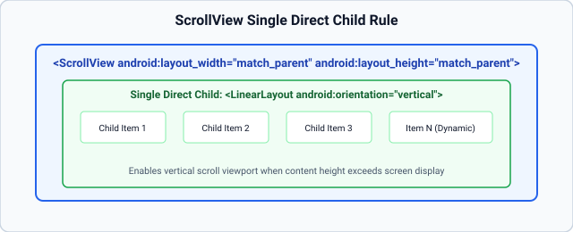
08_Scroll_View/app/src/main/res/layout/activity_main.xml
<?xml version="1.0" encoding="utf-8"?>
<LinearLayout
xmlns:android="http://schemas.android.com/apk/res/android"
android:layout_width="match_parent"
android:layout_height="match_parent"
android:orientation="vertical">
<TextView
android:layout_width="match_parent"
android:layout_height="wrap_content"
android:text="SCROLL VIEW DEMO"
android:textSize="22sp"
android:textStyle="bold"
android:gravity="center"
android:padding="16dp"
android:background="#E0E0E0" />
<ScrollView
android:layout_width="match_parent"
android:layout_height="match_parent">
<LinearLayout
android:id="@+id/linearLayoutContainer"
android:layout_width="match_parent"
android:layout_height="wrap_content"
android:orientation="vertical"
android:padding="16dp" />
</ScrollView>
</LinearLayout>
08_Scroll_View/app/src/main/java/com/example/scroll_view/MainActivity.java
package com.example.scroll_view;
import android.os.Bundle;
import android.widget.LinearLayout;
import android.widget.TextView;
import androidx.appcompat.app.AppCompatActivity;
public class MainActivity extends AppCompatActivity {
@Override
protected void onCreate(Bundle savedInstanceState) {
super.onCreate(savedInstanceState);
setContentView(R.layout.activity_main);
LinearLayout linearLayout = findViewById(R.id.linearLayoutContainer);
for (int i = 1; i <= 25; i++) {
TextView textView = new TextView(this);
textView.setText("Scroll Item " + i + ": Android MCA Lab");
textView.setTextSize(20);
textView.setPadding(24, 24, 24, 24);
linearLayout.addView(textView);
}
}
}
A ScrollView can host strictly one direct child view or layout container. Placing multiple widgets directly inside a ScrollView produces an IllegalStateException: ScrollView can host only one direct child. Always wrap multiple widgets in a single parent LinearLayout.
To implement a compact dropdown Spinner selector populated with catalog items using an ArrayAdapter<String>, capturing user item selections via OnItemSelectedListener and displaying visual feedback.
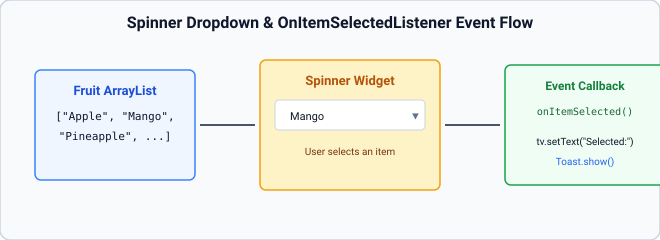
09_Spinner/app/src/main/res/layout/activity_main.xml
<?xml version="1.0" encoding="utf-8"?>
<LinearLayout
xmlns:android="http://schemas.android.com/apk/res/android"
android:layout_width="match_parent"
android:layout_height="match_parent"
android:orientation="vertical"
android:padding="24dp">
<TextView
android:layout_width="match_parent"
android:layout_height="wrap_content"
android:text="SPINNER"
android:textSize="26sp"
android:textStyle="bold"
android:gravity="center"
android:layout_marginTop="20dp"
android:layout_marginBottom="32dp" />
<TextView
android:layout_width="wrap_content"
android:layout_height="wrap_content"
android:text="Select a Fruit:"
android:textSize="18sp"
android:layout_marginBottom="8dp" />
<Spinner
android:id="@+id/sp"
android:layout_width="match_parent"
android:layout_height="wrap_content"
android:padding="12dp"
android:layout_marginBottom="32dp" />
<TextView
android:id="@+id/t1"
android:layout_width="match_parent"
android:layout_height="wrap_content"
android:text="Selected Fruit: None"
android:textSize="20sp"
android:textColor="#2E7D32"
android:textStyle="bold" />
</LinearLayout>
09_Spinner/app/src/main/java/com/example/spinner/MainActivity.java
package com.example.spinner;
import android.os.Bundle;
import android.view.View;
import android.widget.AdapterView;
import android.widget.ArrayAdapter;
import android.widget.Spinner;
import android.widget.TextView;
import android.widget.Toast;
import androidx.appcompat.app.AppCompatActivity;
import java.util.ArrayList;
public class MainActivity extends AppCompatActivity {
Spinner s;
TextView t;
@Override
protected void onCreate(Bundle savedInstanceState) {
super.onCreate(savedInstanceState);
setContentView(R.layout.activity_main);
s = findViewById(R.id.sp);
t = findViewById(R.id.t1);
ArrayList<String> fruitList = new ArrayList<>();
fruitList.add("Apple");
fruitList.add("Mango");
fruitList.add("Pineapple");
fruitList.add("Banana");
fruitList.add("Orange");
fruitList.add("Grapes");
ArrayAdapter<String> adapter = new ArrayAdapter<>(
this,
android.R.layout.simple_spinner_dropdown_item,
fruitList
);
s.setAdapter(adapter);
s.setOnItemSelectedListener(new AdapterView.OnItemSelectedListener() {
@Override
public void onItemSelected(AdapterView<?> parent, View view, int position, long id) {
String selected = fruitList.get(position);
t.setText("Selected Fruit: " + selected);
Toast.makeText(MainActivity.this, "Selected: " + selected, Toast.LENGTH_SHORT).show();
}
@Override
public void onNothingSelected(AdapterView<?> parent) {
t.setText("Selected Fruit: None");
}
});
}
}
The standard lab program uses a static array. Below is the full implementation that takes user input from an EditText and appends it dynamically:
// 1. Dynamic ArrayList backing
ArrayList<String> fruitList = new ArrayList<>();
fruitList.add("Apple");
fruitList.add("Mango");
ArrayAdapter<String> adapter = new ArrayAdapter<>(this,
android.R.layout.simple_spinner_item, fruitList);
adapter.setDropDownViewResource(android.R.layout.simple_spinner_dropdown_item);
spinner.setAdapter(adapter);
// 2. Dynamic Input Capture & Validation
btnAddFruit.setOnClickListener(new View.OnClickListener() {
String fruit = etNewFruit.getText().toString().trim();
if (fruit.isEmpty()) {
etNewFruit.setError("Enter fruit name");
return;
}
fruitList.add(fruit); // Stage 3: Dynamic Data Update
adapter.notifyDataSetChanged(); // Immediately reflects in Spinner dropdown!
etNewFruit.setText(""); // Clear input field
Toast.makeText(MainActivity.this, "Added: " + fruit, Toast.LENGTH_SHORT).show();
});To demonstrate local client-side persistent storage in Android by creating, reading, updating, and clearing key-value pairs (Username, Email) using the SharedPreferences and SharedPreferences.Editor APIs.
10_Shared_Preferences/app/src/main/res/layout/activity_main.xml
<?xml version="1.0" encoding="utf-8"?>
<LinearLayout
xmlns:android="http://schemas.android.com/apk/res/android"
android:layout_width="match_parent"
android:layout_height="match_parent"
android:orientation="vertical"
android:padding="24dp">
<TextView
android:layout_width="match_parent"
android:layout_height="wrap_content"
android:text="SHARED PREFERENCES"
android:textSize="24sp"
android:textStyle="bold"
android:gravity="center"
android:layout_marginTop="20dp"
android:layout_marginBottom="24dp" />
<EditText
android:id="@+id/et_username"
android:layout_width="match_parent"
android:layout_height="wrap_content"
android:hint="Enter Username"
android:inputType="text"
android:layout_marginBottom="16dp" />
<EditText
android:id="@+id/et_email"
android:layout_width="match_parent"
android:layout_height="wrap_content"
android:hint="Enter Email"
android:inputType="textEmailAddress"
android:layout_marginBottom="24dp" />
<LinearLayout
android:layout_width="match_parent"
android:layout_height="wrap_content"
android:orientation="horizontal"
android:layout_marginBottom="12dp">
<Button
android:id="@+id/btn_write"
android:layout_width="0dp"
android:layout_height="wrap_content"
android:layout_weight="1"
android:layout_marginEnd="6dp"
android:text="Write Data" />
<Button
android:id="@+id/btn_read"
android:layout_width="0dp"
android:layout_height="wrap_content"
android:layout_weight="1"
android:layout_marginStart="6dp"
android:text="Read Data" />
</LinearLayout>
<Button
android:id="@+id/btn_clear"
android:layout_width="match_parent"
android:layout_height="wrap_content"
android:text="Clear Data"
android:layout_marginBottom="24dp" />
<TextView
android:id="@+id/txt_status"
android:layout_width="match_parent"
android:layout_height="wrap_content"
android:text="Status: No data loaded"
android:textSize="18sp"
android:padding="16dp"
android:background="#F0F0F0"
android:textColor="#333333" />
</LinearLayout>
10_Shared_Preferences/app/src/main/java/com/example/shared_preferences/MainActivity.java
package com.example.shared_preferences;
import android.content.SharedPreferences;
import android.os.Bundle;
import android.view.View;
import android.widget.Button;
import android.widget.EditText;
import android.widget.TextView;
import android.widget.Toast;
import androidx.appcompat.app.AppCompatActivity;
public class MainActivity extends AppCompatActivity {
private static final String PREF_NAME = "MyPrefs";
private static final String KEY_USER = "username";
private static final String KEY_EMAIL = "email";
EditText etUsername, etEmail;
Button btnWrite, btnRead, btnClear;
TextView txtStatus;
@Override
protected void onCreate(Bundle savedInstanceState) {
super.onCreate(savedInstanceState);
setContentView(R.layout.activity_main);
etUsername = findViewById(R.id.et_username);
etEmail = findViewById(R.id.et_email);
btnWrite = findViewById(R.id.btn_write);
btnRead = findViewById(R.id.btn_read);
btnClear = findViewById(R.id.btn_clear);
txtStatus = findViewById(R.id.txt_status);
// Prefill default sample data from record
etUsername.setText("demo1po");
etEmail.setText("demo1@gmail.com");
// Write to SharedPreferences
btnWrite.setOnClickListener(new View.OnClickListener() {
@Override
public void onClick(View v) {
String user = etUsername.getText().toString().trim();
String email = etEmail.getText().toString().trim();
if (user.isEmpty() || email.isEmpty()) {
Toast.makeText(MainActivity.this, "Please enter both fields", Toast.LENGTH_SHORT).show();
return;
}
SharedPreferences sp = getSharedPreferences(PREF_NAME, MODE_PRIVATE);
SharedPreferences.Editor editor = sp.edit();
editor.putString(KEY_USER, user);
editor.putString(KEY_EMAIL, email);
editor.apply();
txtStatus.setText("Written Data:\nUsername: " + user + "\nEmail: " + email);
Toast.makeText(MainActivity.this, "Data Saved Successfully", Toast.LENGTH_SHORT).show();
}
});
// Read from SharedPreferences
btnRead.setOnClickListener(new View.OnClickListener() {
@Override
public void onClick(View v) {
SharedPreferences sp = getSharedPreferences(PREF_NAME, MODE_PRIVATE);
String user = sp.getString(KEY_USER, null);
String email = sp.getString(KEY_EMAIL, null);
if (user != null && email != null) {
txtStatus.setText("Loaded from SharedPreferences:\nUsername: " + user + "\nEmail: " + email);
Toast.makeText(MainActivity.this, "Data Loaded", Toast.LENGTH_SHORT).show();
} else {
txtStatus.setText("Status: No data found in SharedPreferences");
Toast.makeText(MainActivity.this, "No saved data found", Toast.LENGTH_SHORT).show();
}
}
});
// Clear SharedPreferences
btnClear.setOnClickListener(new View.OnClickListener() {
@Override
public void onClick(View v) {
SharedPreferences sp = getSharedPreferences(PREF_NAME, MODE_PRIVATE);
SharedPreferences.Editor editor = sp.edit();
editor.clear();
editor.apply();
txtStatus.setText("Status: SharedPreferences cleared");
Toast.makeText(MainActivity.this, "Data Cleared", Toast.LENGTH_SHORT).show();
}
});
}
}
SharedPreferences sp = getSharedPreferences("MyPrefs", MODE_PRIVATE); opens an XML file stored in private app data storage.sp.edit().putString("name", name).putString("email", email).apply(); stages the key-value edits and persists them asynchronously.sp.getString("name", ""); extracts the string with an empty fallback default.sp.edit().clear().apply(); wipes all stored keys, resetting the state.| Criteria | apply() | commit() |
|---|---|---|
| Thread Execution | Asynchronous (writes to disk in background worker thread). | Synchronous (writes to disk on calling thread). |
| Return Value | void (fire-and-forget). | boolean (returns true if write succeeded). |
| UI Thread Impact | Completely safe for Main UI thread; zero frame drops. | Can block UI thread during heavy disk I/O (risk of ANR). |
This progressive application combines credential capture, rigorous validation, session persistence using SharedPreferences, cross-activity data exchange via Intent, and secure logout state management.
Introduces raw text capture via EditText and a submission Button without validation.
// Var 1.1: Extracting raw strings
String u = etUser.getText().toString();
String p = etPass.getText().toString();Integrates setError() on empty fields and checks credentials with Toast feedback.
// Var 1.2: Validation logic
if (u.isEmpty()) etUser.setError("Required");
else if (p.isEmpty()) etPass.setError("Required");
else if (u.equals("admin") && p.equals("1234")) {
Toast.makeText(this, "Success", Toast.LENGTH_SHORT).show();
}Stores an IS_LOGGED_IN boolean flag so restarting the app remembers the active user.
// Var 1.3: Session write
SharedPreferences sp = getSharedPreferences("Auth", MODE_PRIVATE);
sp.edit().putString("USER", u).putBoolean("LOGGED", true).apply();Passes the authenticated username to ProfileActivity via Intent Extras.
// Var 1.4: Intent data transfer
Intent intent = new Intent(this, ProfileActivity.class);
intent.putExtra("LOGGED_USER", u);
startActivity(intent);The definitive production architecture incorporating auto-login checks in onCreate() and a complete Logout routine that wipes the session and returns to login:
// Var 1.5: Auto-login & Logout
public class ProfileActivity extends AppCompatActivity {
@Override
protected void onCreate(Bundle b) {
super.onCreate(b);
setContentView(R.layout.activity_profile);
Button btnLogout = findViewById(R.id.btnLogout);
btnLogout.setOnClickListener(new View.OnClickListener() {
@Override
public void onClick(View v) {
SharedPreferences sp = getSharedPreferences("Auth", MODE_PRIVATE);
sp.edit().clear().apply(); // Wipe session
Intent i = new Intent(ProfileActivity.this, MainActivity.class);
i.setFlags(Intent.FLAG_ACTIVITY_NEW_TASK | Intent.FLAG_ACTIVITY_CLEAR_TASK);
startActivity(i);
finish();
}
});
}
}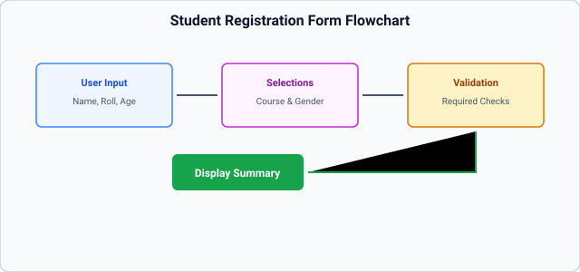
Captures Name, University Roll Number, and Age using numeric and text EditText controls.
Binds an academic program list (MCA, M.Tech, B.Tech) to a Spinner using ArrayAdapter.
String[] courses = {"MCA", "M.Tech CSE", "B.Tech"};
ArrayAdapter<String> adapter = new ArrayAdapter<>(
this, android.R.layout.simple_spinner_dropdown_item, courses);
spCourse.setAdapter(adapter);Introduces a RadioGroup for Gender selection (Male/Female) and independent CheckBox controls for elective technical skills (Java, Python, Mobile App Dev).
Bundles validated inputs and forwards them to a read-only SummaryActivity.
Full enterprise implementation with multi-field validation, ArrayList parceling, and styled summary card rendering:
// Var 2.5: Bundling complex registration payload
ArrayList<String> skills = new ArrayList<>();
if (cbWeb.isChecked()) skills.add("Web Programming");
if (cbMobile.isChecked()) skills.add("Mobile Dev");
Intent intent = new Intent(MainActivity.this, StudentSummaryActivity.class);
intent.putExtra("NAME", name);
intent.putExtra("ROLL", roll);
intent.putExtra("COURSE", course);
intent.putExtra("GENDER", gender);
intent.putStringArrayListExtra("SKILLS", skills);
startActivity(intent);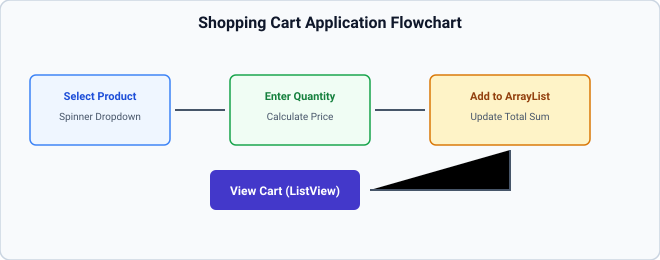
Displays inventory items with unit prices in a dropdown Spinner.
Computes unitPrice * quantity upon user input and displays running totals.
Appends selected product lines into a runtime Java ArrayList<String>.
ArrayList<String> cart = new ArrayList<>();
cart.add("Android Handbook (Qty 2) = $100");Connects an ArrayAdapter to a ListView, updating the UI dynamically via adapter.notifyDataSetChanged().
Enables adding multiple items, computing grand total with sales tax, item removal on click, and launching an Order Receipt Activity:
// Var 3.5: Order Dispatch
Intent checkout = new Intent(this, ReceiptActivity.class);
checkout.putStringArrayListExtra("CART_ITEMS", cartItems);
checkout.putExtra("TOTAL_AMOUNT", grandTotal);
startActivity(checkout);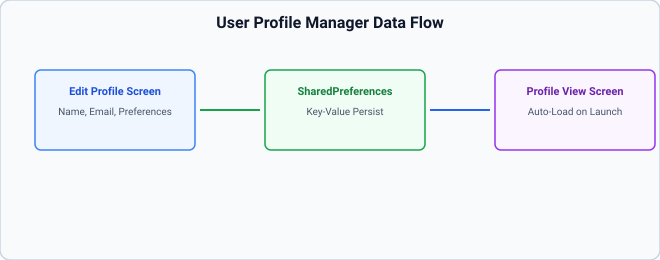
Captures user Full Name, Email Address, and Phone Number.
Adds modern UI toggles: Switch for Dark Mode and Notification preferences.
Validates email format using Android regex pattern Patterns.EMAIL_ADDRESS.matcher(email).matches().
Navigates to a formatted user card layout via Explicit Intent.
Synchronizes all fields to SharedPreferences, automatically re-populates values on app restart, and includes a full reset routine:
// Var 4.5: Profile Auto-Sync
SharedPreferences sp = getSharedPreferences("ProfilePrefs", MODE_PRIVATE);
// Auto-load on onCreate
etName.setText(sp.getString("NAME", ""));
swNotify.setChecked(sp.getBoolean("NOTIFY", true));
// Save on Click
sp.edit()
.putString("NAME", etName.getText().toString())
.putBoolean("NOTIFY", swNotify.isChecked())
.apply();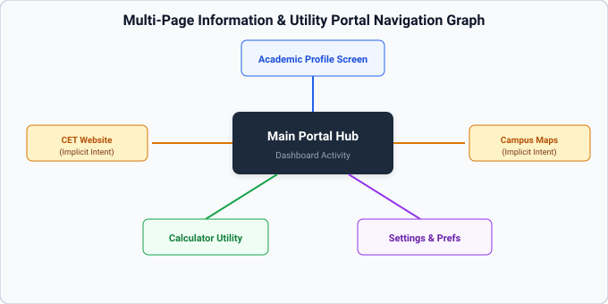
Central dashboard menu navigating to independent sub-activities.
Uses startActivityForResult() to request feedback or settings from secondary screens.
Embeds CET Web Portal (ACTION_VIEW) and Campus Location coordinates in Google Maps (geo:).
Caches recent user activities and visits in SharedPreferences.
A flagship enterprise portal combining explicit navigation, implicit web/map integrations, dynamic calculator utilities, profile caches, and an AlertDialog confirmation exit dialog:
// Var 5.5: Exit Confirmation Dialog
new AlertDialog.Builder(MainActivity.this)
.setTitle("Exit Portal")
.setMessage("Are you sure you want to exit?")
.setPositiveButton("Yes", (d, w) -> finish())
.setNegativeButton("No", null)
.show();| Layer | Underlying Tech | Primary Responsibilities | Key Components |
|---|---|---|---|
| Applications | Java / Kotlin | User interaction & presentation | Home, Phone, Custom MCA Apps |
| Application Framework | Java APIs | High-level services & management | ActivityManager, WindowManager, ContentProviders |
| Libraries & Runtime | C/C++ & DEX | Native engines & bytecode execution | SQLite, WebKit, OpenGL ES, ART (AOT/JIT) |
| Hardware Abstraction (HAL) | C/C++ stubs | Device driver standardization | Camera, Audio, Bluetooth, Sensors HAL |
| Linux Kernel | C | Hardware interface & core OS services | Process management, Binder IPC, LMK, Power |
| Attribute | Valid Layouts | Functional Purpose |
|---|---|---|
android:orientation | LinearLayout | Defines arrangement axis: vertical or horizontal. |
android:layout_weight | LinearLayout | Distributes surplus dimension proportionally among sibling views. |
android:gravity | View / ViewGroup | Controls alignment of content inside the view (e.g. text inside button). |
android:layout_gravity | Child of ViewGroup | Controls alignment of the view itself inside its parent container. |
android:layout_margin | All Views | Defines external spacing around the view perimeter. |
android:padding | All Views | Defines internal spacing between view boundary and its content. |
app:layout_constraintTop_to... | ConstraintLayout | Anchors the top constraint edge to a target sibling or parent boundary. |
| Storage Option | Data Format | Visibility | Persistence | Typical Use Case |
|---|---|---|---|---|
| SharedPreferences | XML Key-Value pairs | Private to app | Permanent (until cleared) | User settings, login session tokens |
| Internal Storage | Raw binary / text files | Private to app | Permanent (until uninstalled) | Downloaded caches, private app files |
| External Storage | Shared media files | Public / Scoped | User-managed | Photos, videos, documents, music |
| SQLite / Room | Relational SQL tables | Private to app | Permanent structured | Complex relational catalogs, offline caching |
AndroidManifest.xml is the fundamental deployment descriptor and contract of an Android application. It declares the application package name, all components (Activities, Services, Broadcast Receivers, Content Providers), required system permissions, minimum/target SDK versions, and hardware requirements. The OS refuses to execute unregistered components.R class is an auto-generated Java class created by the AAPT2 tool. It maps all resources under the res/ directory into static hexadecimal 32-bit integer constants (e.g., R.id.btnLogin, R.layout.activity_main), enabling type-safe programmatic access from Java code.sp additionally factors in the user's system-level accessibility font size preferences. Hence, dp is used for layout dimensions (widths, heights, margins), while sp is strictly reserved for text typography (textSize).new Intent(this, SecondActivity.class)). An Implicit Intent declares a generalized action (e.g. ACTION_VIEW, ACTION_DIAL) and data URI, delegating to the Android OS to resolve the best matching external application via Intent Filters.onPause → onStop → onDestroy) and recreates a fresh instance from scratch (onCreate → onStart → onResume) to load resources from alternative qualifier folders (e.g., layout-land/).onSaveInstanceState(Bundle outState) callback and restored in onCreate(Bundle savedInstanceState) or onRestoreInstanceState(). For persistent storage across app restarts, SharedPreferences or a database is used.ArrayList) and an AdapterView (such as ListView or Spinner). It inflates and binds individual data items to child view rows on demand, recycling views to minimize memory consumption.layout_weight specifies how remaining unused space along the layout's orientation axis should be divided among sibling views. When set to 0dp width (horizontal) or 0dp height (vertical) alongside weight values, views expand proportionally relative to each other.commit() writes data synchronously to disk on the main calling thread and returns a boolean status, risking UI stuttering. apply() commits changes to the in-memory cache immediately and writes to disk asynchronously in a background worker thread, ensuring smooth UI performance.ScrollView can host strictly one direct child view element. To place multiple widgets inside a ScrollView, all widgets must be nested inside a single parent container (such as a vertical LinearLayout).ActivityNotFoundException occurs when an implicit intent is triggered, but no installed application on the device matches the specified action, data scheme, or category. It must be guarded against using try-catch or intent.resolveActivity().RadioGroup enforces single-choice mutual exclusion among its child RadioButton views (selecting one deselects others). CheckBox allows independent multiple-choice selection, where any combination of options can be toggled simultaneously.<intent-filter> must explicitly declare android:exported="true" (if accessible to outside apps/launcher) or false (if strictly private) to mitigate security vulnerabilities.intent.putExtra(key, value) and extracted in the destination Activity via getIntent().getStringExtra(key), getIntExtra(key, defaultValue), or getBooleanExtra(key, defaultValue).finish() explicitly terminates the current Activity instance, initiating its destruction lifecycle (onPause → onStop → onDestroy) and popping it off the back-stack so the user returns to the preceding screen.AndroidManifest.xml granting the application access to open network sockets and retrieve remote web resources (e.g. via HTTP/HTTPS).NullPointerException and ClassCastException risks inherent to manual findViewById().match_parent forces the view to expand and occupy all available space within its parent container. wrap_content restricts the view dimensions to only the size necessary to encompass its internal contents (e.g., text or image boundaries).ACTION_VIEW, ACTION_SEND). Data provides the URI upon which that action operates, encoded with specific schemes such as https:// for websites or tel: for dialers.OnClickListener is attached to standalone individual views (like Button, TextView). OnItemClickListener is attached to an AdapterView container (ListView, GridView) and provides parameters indicating the exact clicked row position (position) and data row ID (id).Log.d(TAG, message) writes debug messages tagged with an identifier, allowing developers to inspect program flow, variable states, and exception traces without displaying visual artifacts to end users.super.onCreate(savedInstanceState) causes the runtime framework to throw a SuperNotCalledException, crashing the application immediately upon launch because base framework initialization was bypassed.<intent-filter> is an XML declaration inside AndroidManifest.xml that specifies the types of implicit intents an Activity, Service, or BroadcastReceiver can respond to based on declared actions, categories, and data schemes.AlertDialog is instantiated using the Builder pattern: new AlertDialog.Builder(context).setTitle(...).setMessage(...).setPositiveButton(...).setNegativeButton(...).show().R.java. 2) javac compiles Java code into .class bytecode. 3) D8 dexer converts class files into Dalvik Executable (.dex) format. 4) APK Packager zips DEX, resources, and assets. 5) apksigner signs with a digital certificate and zipalign optimizes alignment for memory efficiency.